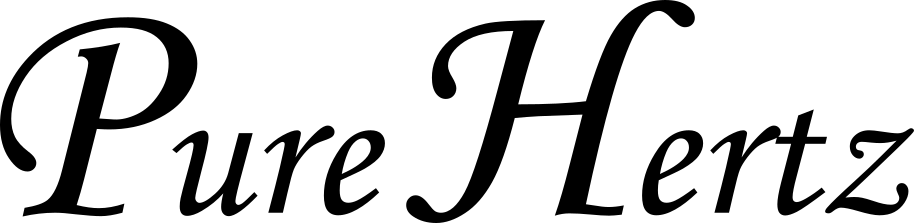

Home
About
Works
Works
Categories
All
(11)
Music
(6)
Original song
(6)
レーザー
(2)
低雑音電源
(1)
光共振器
(1)
温度制御
(1)
電子回路
(5)
共振器コントローラー
電子回路
レーザー
光共振器
ファブリペロー共振器コントローラーです。 共振器共鳴周波数をレーザー周波数に安定化するのに使えます。 オートリロック機能付きで、共振器周りでうるさい作業をしてもロックが外れません。
2024-03-02
温度コントローラー
電子回路
温度制御
温度コントローラーを作ってみました。 普段は製品を購入していますが、一度自作してみようということで。自作経験があれば、予算不足に陥ったときも怖くない？ペルチェとサーミスタで制御する仕様です。
2024-03-01
低雑音アンプ用の電源の中身を見てみる
電子回路
低雑音電源
某メーカーの低雑音アンプ用電源の中を覗いてみました。
2024-02-27
低速受光器
電子回路
レーザー
CWレーザー分光やレーザーパワーモニターなどに使用する低速受光器です。
2024-02-23
三角波発振器（掃引回路）
電子回路
三角波と矩形波を出力する低速発振回路です。 三角波は掃引信号として、矩形波はそのトリガー信号として、さまざまな装置で便利に使用できます。
2024-02-23
Colour of the Universe
Music
Original song
天体が放つ光のドップラーシフトを利用した天体視線速度測定は、太陽型恒星の周りを公転する系外惑星が初めて発見された際に用いられた手法である。さらに精度を高めることで、地球型系外惑星発見、宇宙加速膨張の直接的実証、基礎物理定数の恒常性検証が可能になると期待されている。
2023-06-03
ダンス万能説 -Dance Versatileness-
Music
Original song
踊るときにあれこれ考えるのは大きなミス。感じることが大切だよ。
2011-12-19
いつもの場所
Music
Original song
2011年、東日本大震災の直後に作った曲。
2011-04-20
Goodbye to My Days
Music
Original song
修士時代、田舎に帰ってしまった同期の友人の心情を想像して作った曲。
2010-03-02
Regrets
Music
Original song
「やらないで後悔するより、やって後悔したほうがいいって言うよね？」という想いを鏡音リンに歌ってもらいました。
2009-08-04
LIMIT BREAKER!!
Music
Original song
「なんでやらない！？」「どうして限界を決める！？」「もっと熱くなれよ！！」そんなな想いを曲にしました。
2009-04-21
No matching items